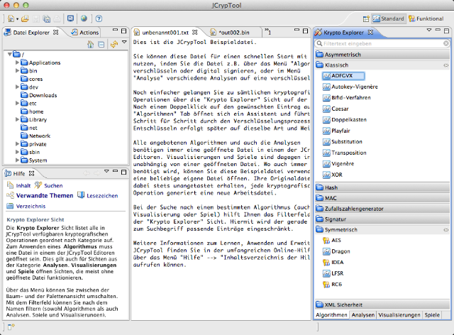

Die Standard-Perspektive ist die Dokumenten- bzw. Datei-orientierte Hauptperspektive, die einen einfachen Zugriff auf alle wichtigen JCrypTool-Funktionen ermöglicht.
Mit der Tastenkombination Strg-3 starten Sie eine schnelle Suche über alle Elemente in der Standard-Perspektive.
In dieser Perspektive können über die Datei-Explorer-Sicht auf der linken Seite beliebige Dateien geöffnet werden. Alternativ stehen Ihnen zum Öffnen (Speichern/Anlegen) von Dateien – wie in den meisten Applikationen – das Datei-Menü und auch die Toolbar zur Verfügung. Über die Krypto-Explorer-Sicht auf der rechten Seite können kryptografische Operationen auf diese Dateien angewendet werden. Das Menü Algorithmen in der Menüleiste enthält dieselben Einträge wie die Krypto-Explorer-Sicht.

Hier zeigt sich das Datei-orientierte Konzept von JCrypTool: Nach dem Öffnen einer Datei wird auf dieser das gewünschte kryptografische Verfahren ausgeführt. Die Originaldatei bleibt dabei stets erhalten, jedes Verfahren generiert immer eine neue, temporäre Datei. In der Regel müssen Sie vor einer kryptografischen Operation zunächst die gewünschte Datei auswählen.
Nicht alle kryptografischen Verfahren benötigen eine geöffnete Datei in einem der Editoren: Visualisierungen und Spiele werden beispielsweise in einer Vollbild-Ansicht angezeigt, ohne Bezug zu einem Editor.